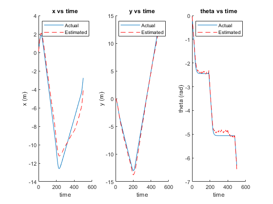
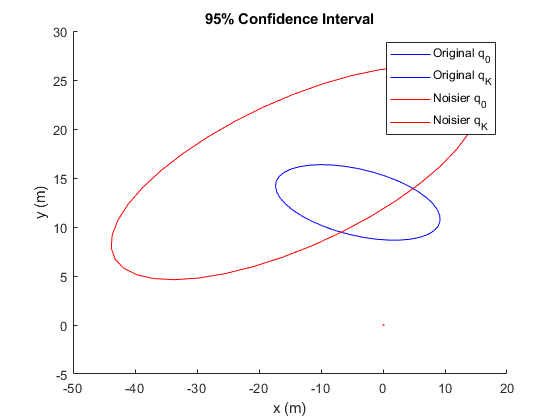

Contents
Problem 1
clc,clear,close
rng(623)
timesteps = 500;
V = diag([.03 .8*pi/180].^2);
P0 = diag([.01 .015 .1*pi/180].^2);
v = 1.5;
rp = RandomPath(20);
veh = Bicycle('covar',V);
veh.add_driver(rp);
veh.speedmax = 1.5;
ekf = EKF2(veh,V,P0);
ekf.run(timesteps);
x_est = [ekf.history.x_est]';
figure(1)
subplot(1,3,1)
hold on
plot(veh.x_hist(:,1))
plot(x_est(:,1),'--r')
xlabel('time')
ylabel('x (m)')
title('x vs time')
legend('Actual','Estimated')
hold off
subplot(1,3,2)
hold on
plot(veh.x_hist(:,2))
plot(x_est(:,2),'--r')
xlabel('time')
ylabel('y (m)')
title('y vs time')
legend('Actual','Estimated')
hold off
subplot(1,3,3)
hold on
plot(veh.x_hist(:,3))
plot(x_est(:,3),'--r')
xlabel('time')
ylabel('theta (rad)')
title('theta vs time')
legend('Actual','Estimated')
hold off

Problem 2
clc,clear,close
rng(623)
timesteps = 500;
V = diag([.03 .8*pi/180].^2);
P0 = diag([.01 .015 .1*pi/180].^2);
v = 1.5;
rp = RandomPath(20);
veh = Bicycle('covar',V);
veh.add_driver(rp);
veh.speedmax = 1.5;
ekf = EKF2(veh,V,P0);
figure(2)
ekf.run(timesteps);
close(figure(2))
figure(1)
hold on
ekf.plot_ellipse('b','interval',length(veh.x_hist)-1)
V = diag([.03 2*.8*pi/180].^2);
veh = Bicycle('covar',V);
veh.add_driver(rp);
veh.speedmax = 1.5;
ekf = EKF2(veh,V,P0);
figure(2)
ekf.run(timesteps);
close(figure(2))
ekf.plot_ellipse('r','interval',length(veh.x_hist)-1)
xlabel('x (m)')
ylabel('y (m)')
title('95% Confidence Interval')
legend('Original q_0','Original q_K','Noisier q_0','Noisier q_K')
hold off

Problem 3
clc,close,clear
rng(2021)
V = diag([1/12 .5*pi/180].^2);
P0 = diag([10^-6 10^-6 10^-6].^2);
veh = Bicycle('covar',V);
speed = 40;
speed = speed*(5280/3600);
steering_angle = 0;
ekf = EKF2(veh,V,P0);
inLane = 1;
count = 0;
while inLane
odo = ekf.step_man(speed,steering_angle);
count = count + 1;
std_y = sqrt(ekf.P_est(2,2));
if ekf.x_est(2) + 2*std_y >= 2 || ekf.x_est(2) - 2*std_y <= -2
inLane = 0;
end
end
end_time = length(ekf.history)*veh.dt;
fprintf('Part a)\nIt took the vehicle %.2f seconds for the 95%% confidence interval to leave the 2ft bound\n',end_time)
Part a)
It took the vehicle 11.50 seconds for the 95% confidence interval to leave the 2ft bound
Problem 3 Part b
clc,clear,close
end_times = zeros(1,100);
for i=1:100
rng(round(rem(now,1)*10^8))
V = diag([1/12 .5*pi/180].^2);
P0 = diag([10^-6 10^-6 10^-6].^2);
veh = Bicycle('covar',V);
speed = 40;
speed = speed*(5280/3600);
steering_angle = 0;
ekf = EKF2(veh,V,P0);
inLane = 1;
count = 0;
while inLane
odo = ekf.step_man(speed,steering_angle);
count = count + 1;
std_y = sqrt(ekf.P_est(2,2));
if ekf.x_est(2) + 2*std_y >= 2 || ekf.x_est(2) - 2*std_y <= -2
inLane = 0;
end
end
end_times(i) = length(ekf.history)*veh.dt;
end
filtered_end_times = end_times(end_times >= 11.5);
num_passed = length(filtered_end_times);
percent_passed = num_passed/100;
fprintf('Part b)\n%.2i of the simulations were not out of bounds by 11.5 seconds\n',num_passed)
Part b)
80 of the simulations were not out of bounds by 11.5 seconds